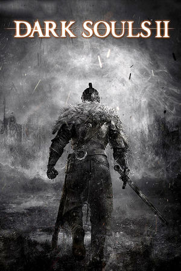

PlayStation 3, Xbox 360, Windows, PlayStation 4, Xbox One
Originally released in March 2014 for PlayStation 3 and Xbox 360, with a PC version following in April, Dark Souls II is an action role-playing game developed by FromSoftware and published by Bandai Namco Games. Directed by Tomohiro Shibuya and Yui Tanimura rather than series creator Hidetaka Miyazaki, it sends the player character, the Bearer of the Curse, to the fading kingdom of Drangleic in search of a cure for the undead curse. Gameplay retains the trademark stamina-based combat, brutal difficulty, and bonfire checkpoints, while introducing refinements such as a faster, more fluid combat feel, an overhauled multiplayer system built around Soul Memory. While Soul Memory was a divisive addition, the game also introduced the Power Stance which dramatically enhances a player's damage output while dual-wielding, at the cost of increased stamina consumption.
In addtion to the base game, FromSoftware released a trilogy of downloadable content chapters throughout 2014: Crown of the Sunken King (July), Crown of the Old Iron King (August), and Crown of the Ivory King (September), each adding a challenging new area with its own boss fights and lore. In 2015 the game was re-released as Dark Souls II: Scholar of the First Sin, a definitive edition bundling all three DLC expansions together with improved lighting, rebalanced enemy placement, updated item descriptions, and expanded online features; it arrived on PlayStation 4 and Xbox One. Though it initially divided critics and fans over the world's inconsistent design and more frustrating difficulty, Dark Souls II sold extremely well and has since been reappraised by much of the community as an ambitious, content-rich entry with excellent areas and boss fights.
FromSoftware
- Official developer website.
Dark Souls Wiki
- Contains lots of useful information about Dark Souls games.
Dark Souls Fextralife Wiki
- Another wiki that contains lots of useful information about Dark Souls games.
Dark Souls II: Scholar of the First Sin Manual (JP, Xbox 360)
- Online manual for the Xbox 360 version in Japanese.
Dark Souls II: Scholar of the First Sin Manual (JP, Windows)
- Online manual for the Windows version in Japanese.
Dark Souls II: Scholar of the First Sin Manual (JP, PS4)
- Online manual for the PS4 version in Japanese.
Dark Souls II: Scholar of the First Sin Manual (JP, Xbox One)
- Online manual for the Xbox One version in Japanese.
Steam Grid DB (DS2) - Contains lots of cool options for artwork that can be used in your Steam library.